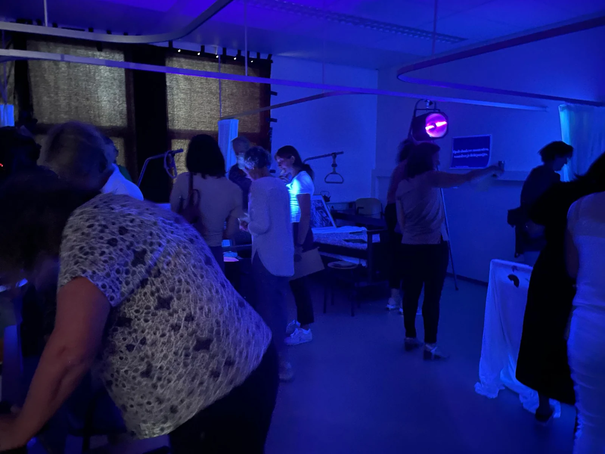

CHANTAL VAN KEMPEN
What would you like to spark?
A talk, a shared experience or creative leadership. Explore what fits your question.
FOR PROGRAMME DESIGNERS, EDUCATORS & ORGANISATIONS
What if you
experienced it yourself?
Less talking about change. More experiencing it.
For your programme +
I design physical and sometimes blended experiences around personal development, collaboration and possible futures. From the initial question and concept to the participant journey, creative partners and delivery.
Together we define what participants explore, how to support them and how reflection connects the experience to their own practice.

CREATIVE PROJECT LEADERSHIP & NEW INITIATIVES
From ambition
to action.
A social challenge or an initiative that still needs to take shape? I help clarify the question and build something together.
For example: involving young people, bringing different partners together or developing a new programme.
How I make it happen +
Finding direction
Unpacking the challenge, understanding different interests and developing an approach we can act on.
Bringing people along
Connecting perspectives, strengthening ownership and making decisions together.
Making it happen
Combining creative direction with oversight, follow-through and practical delivery, so an idea becomes something real.
Experience across different worlds
Future Village — project leadership in participatory art and youth programmes.
Alfen — a management team change programme focused on collaboration, ownership and decision-making.
Philadelphia — three evenings with clients, staff and parents as the basis for a vision and multi-year plan.
How we get started +
The question & the people. What is happening, who do you want to make a difference for, and who needs a say? We explore the question with the people it concerns.
A realistic first step. We discuss the intended outcomes, available time, resources and people. Together we agree on the approach, scope and my role.
Something to build on. We agree on what should remain after the assignment: for example a programme, working method, materials or knowledge within the team. We also decide how to make the outcomes visible.
FOR YOURSELF / IN DEVELOPMENT
There is still
so much to discover.
New people. Different ideas. A day beyond your familiar routines.
An experience day in development. For anyone curious about a next chapter.
Curious? +
I am exploring an experience day for curious people who want to discover what a next chapter could look like. With play, unexpected encounters and small experiments beyond your familiar routines.
An idea in development, not yet a bookable programme. Would you like to contribute or hear when a pilot becomes available?
A WORLD OF MY OWN, TAKING SHAPE
Space for
the unknown.
A world for deeper development. Futures thinking, being human together and big questions. I am looking for people to help build it.
Help shape it ↗